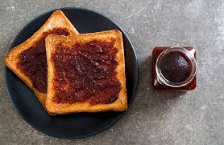
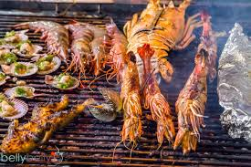

Australian Cuisine
Vegemite on Toast
Spread on toast, this iconic Australian snack made from yeast extract is a must-try for any visitor!
Pavlova
A delicious meringue-based dessert topped with fresh fruit. A true Aussie classic!
Meat Pies

Savory and delicious, these are a staple snack in Australia, filled with meat, gravy, and vegetables.
Barbecued Seafood
From prawns to barramundi, barbecuing seafood is a popular Australian tradition.